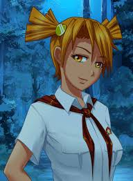

Алиса
Алиса — девушка среднего роста с ярко-рыжими волосами, завязанными в два коротких хвоста,
и очень выразительными янтарными глазами. Поначалу характеризуется главным героем как неисправимая хулиганка из-за её
страсти к разнообразным пакостям и нежелания следовать правилам лагеря. Но оказывается, что это, по сути, маска, и вне этого
образа Алиса добра, боязлива и наивна, а также стеснительна и неопытна в любви.
Любит игру на гитаре, но никогда не была замечена за игрой на публике. Любит плавание.
Сильно раздражается, когда кто-то называет её "ДваЧе".
Алиса — человек, который не будет связываться с любым встречным,
так как имеет твёрдые принципы относительно людей, поэтому достаточно тяжело получить её расположение.